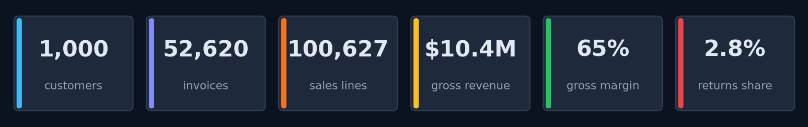

Realistic, multi‑year retail data — from one Python command.
A configurable synthetic data generator for retail / CRM / ERP analytics. AdventureWorks-style relational schema, RetailSynth-grade cohort behavior, holiday seasonality, promotions, returns, multi-market support, and 100% reproducibility from a seed.

Eleven years of monthly revenue, drawn frame by frame.
Watch November / December holiday spikes flare up year after year as the customer base ramps from 9 to 1,000.
